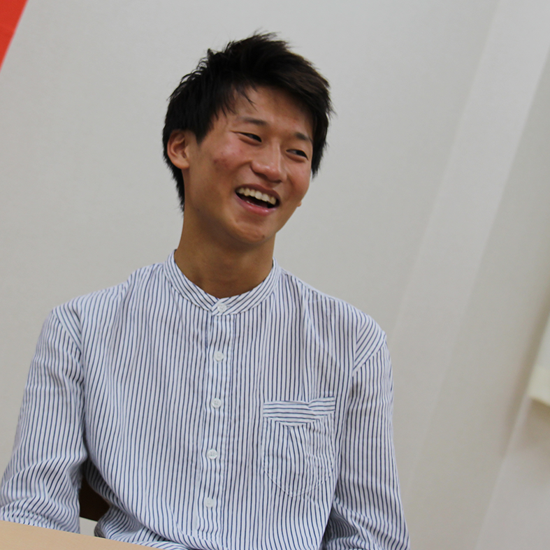
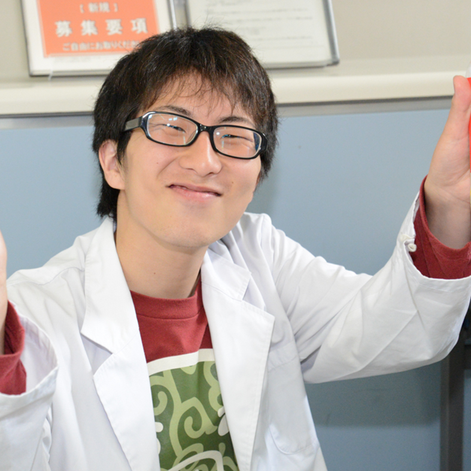
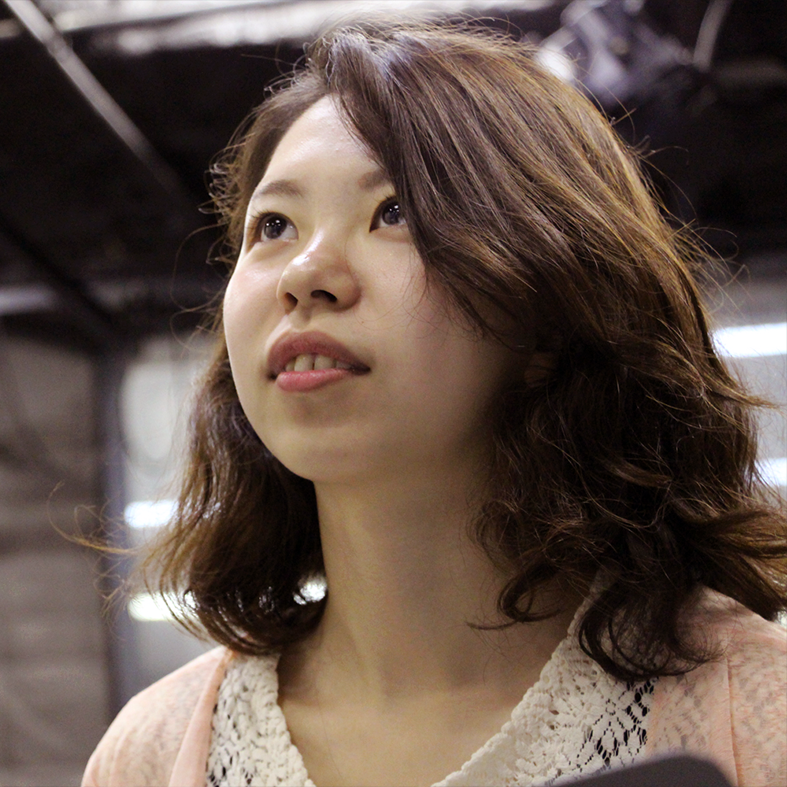
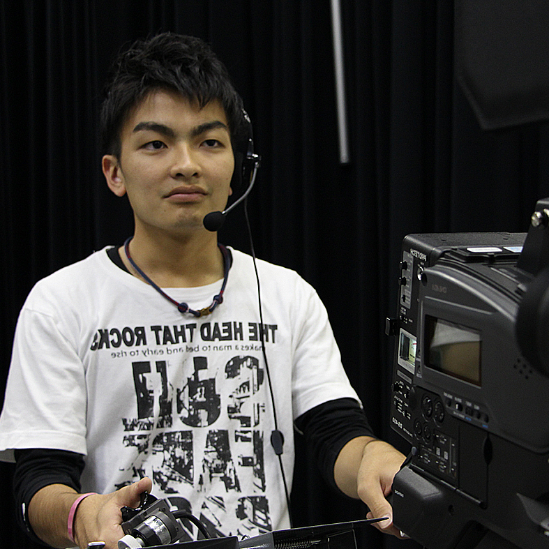
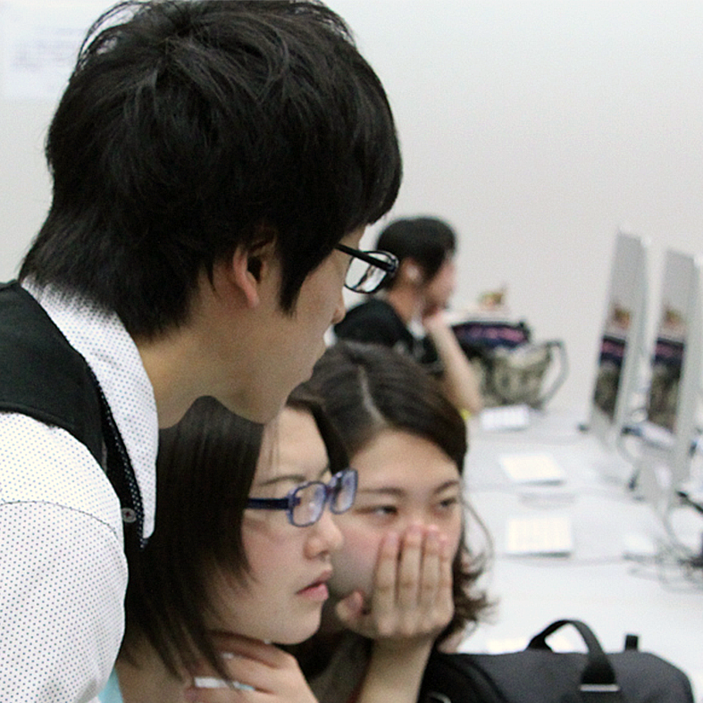

01
新歓PV
02
メッセージ

リーダー
木山 慎太郎
MCSを認知してもらうため、広報活動を行います。HTMLやCSSを使ってのwebサイト制作や、IllustratorやPhotoshopを使ってのビラ、ポスター制作などを担当する他、オープンキャンパスなどのイベント時は、受付や誘導、ビラ配りなどを担当します。近年では、フリーペーパーの制作にも取り組んでいます。

サブリーダー
横川慶
MCSを認知してもらうため、広報活動を行います。HTMLやCSSを使ってのwebサイト制作や、IllustratorやPhotoshopを使ってのビラ、ポスター制作などを担当する他、オープンキャンパスなどのイベント時は、受付や誘導、ビラ配りなどを担当します。近年では、フリーペーパーの制作にも取り組んでいます。

制作局 サブチーフ
谷上 琴音
実際にテレビ局にあるものと同じ音響・照明・カメラ等の機材を用い、撮影を担当する他、撮影した映像の編集も担当します。また 、衣装やセットにあたる小道具や大道具の準備も技術局の仕事です。

技術局 サブチーフ
中嶋 涼人
実際にテレビ局にあるものと同じ音響・照明・カメラ等の機材を用い、撮影を担当する他、撮影した映像の編集も担当します。また 、衣装やセットにあたる小道具や大道具の準備も技術局の仕事です。

広報局 サブチーフ
播磨 尚希
実際にテレビ局にあるものと同じ音響・照明・カメラ等の機材を用い、撮影を担当する他、撮影した映像の編集も担当します。また 、衣装やセットにあたる小道具や大道具の準備も技術局の仕事です。
03
Q&A
Q.MCSとは？
A.aaaaaaaaaa aaaaaaaaaaああああああああああああああああああああああああああああああああああああああああああああああああああああああああああああああああああああああああああああああああああああああああああああああああああああああああああああああああああああああああああああああああああああああああああああああああああああああああああああ
Q.活動日、活動時間は？
A.aaaaaaaaaaaaaaaaaaaaa aaaaaa
Q.男女比は？
A.aaaa aaaaaa aaaaaaaa aaaaaa
04
スケジュール
BACK